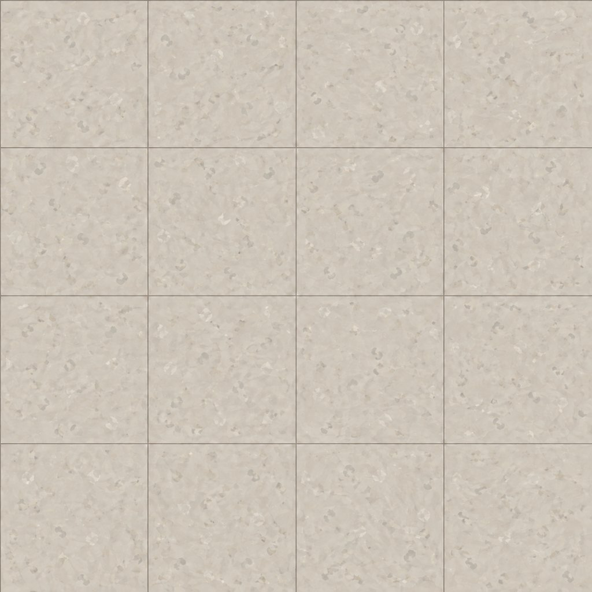
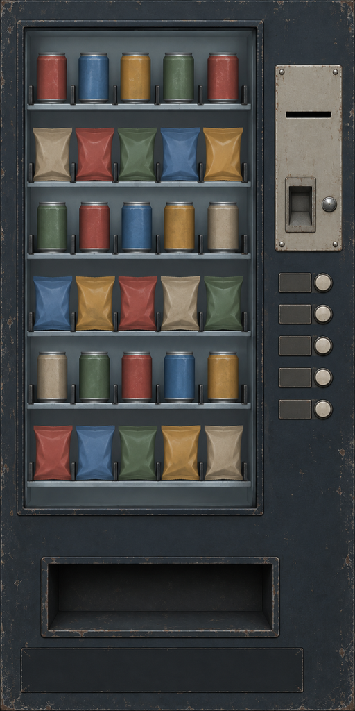
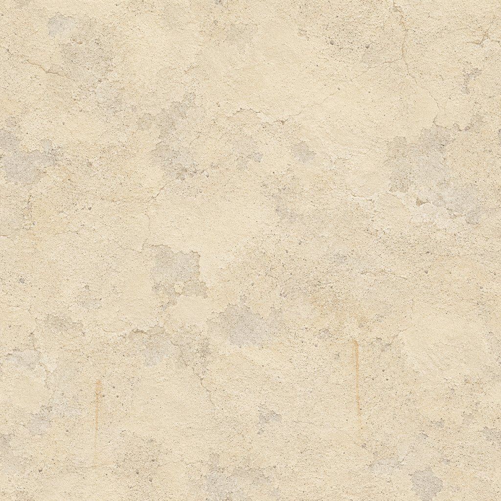
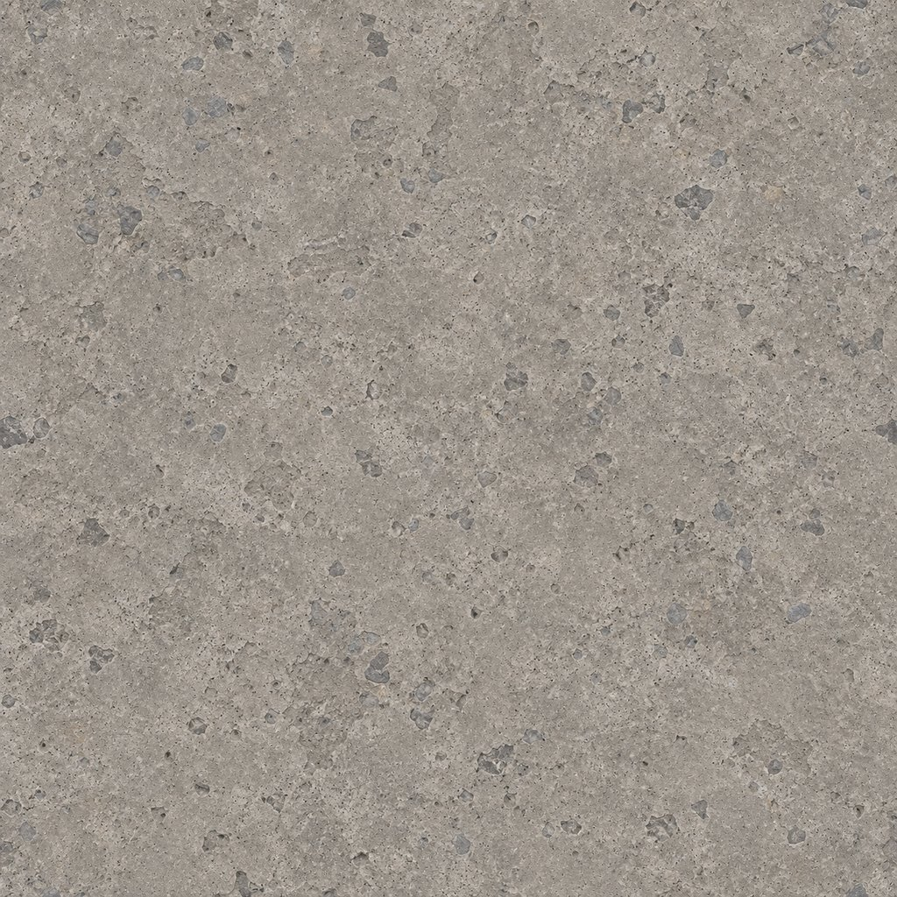
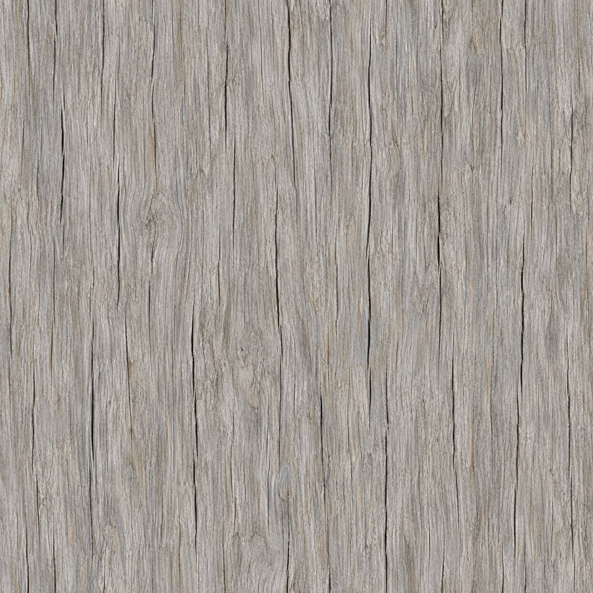
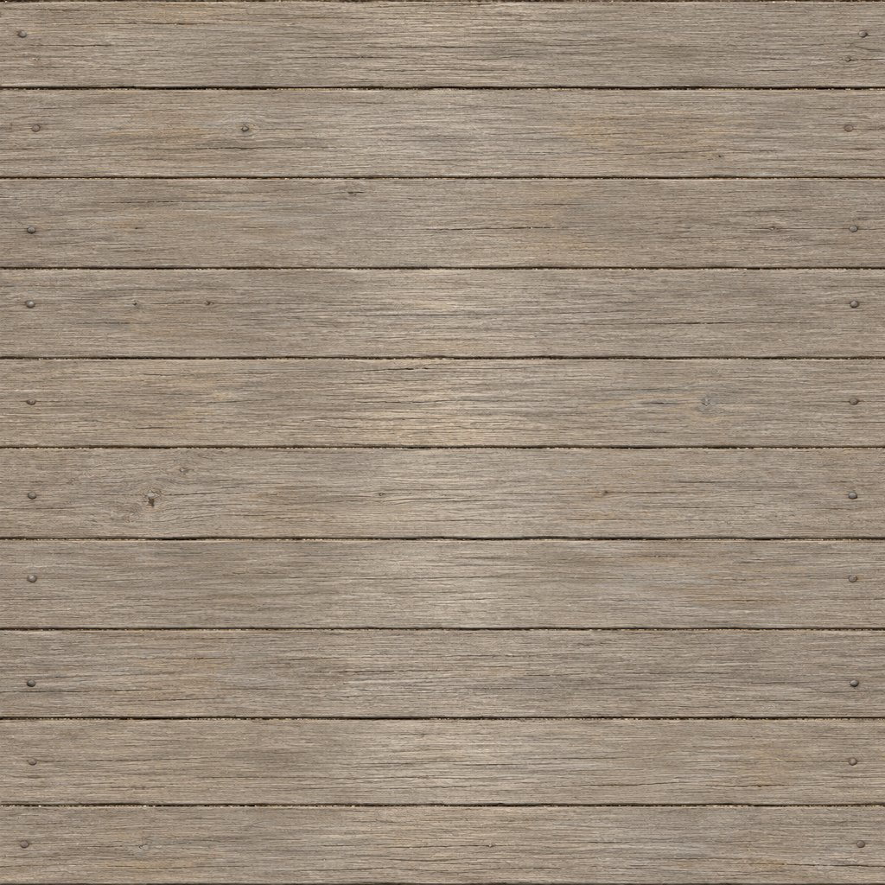

Arkivets vinylgulv
annex/tex_floor_vinyl.jpg · 1024 × 10241,2 × 1,2 meter per bilde. Kvadratiske fliser på 30 cm.
Vanlig 2 × 2-repetisjonSeks materialflater etter Claudes brief. Engelske skilttekster legges på i kode. Dette galleriet viser kildeassets; innkobling og spilltest gjøres av kodeansvarlig.
Tidligere produksjonsflater · Konsepter og lokasjonskart · Oppdatert SARO-kart

annex/tex_floor_vinyl.jpg · 1024 × 10241,2 × 1,2 meter per bilde. Kvadratiske fliser på 30 cm.
Vanlig 2 × 2-repetisjon
annex/vending_front.png · 512 × 1024Anonyme varer og frie felter for COLD DRINKS. Manifestet angir trygg tekstrute.
Opphav og etikettmål
station/tex_stucco_wall.jpg · 1024 × 1024Solbleket murpuss med forsiktig slitasje. To meter per repetisjon.
Vanlig 2 × 2-repetisjon
station/tex_concrete_old.jpg · 1024 × 1024Til transittpilar og fundamenter. Én meter per repetisjon.
Vanlig 2 × 2-repetisjon
station/tex_wood_weathered.jpg · 1024 × 1024Til stolper, staker, port og hyttedør. UV skaleres til 0,5 × 1 meter.
Vanlig 2 × 2-repetisjon
station/tex_floorboards.jpg · 1024 × 10241,2 × 1,2 meter per repetisjon. Ti matte furubord med smale fuger og litt variasjon i bredden.
Vanlig 2 × 2-repetisjon